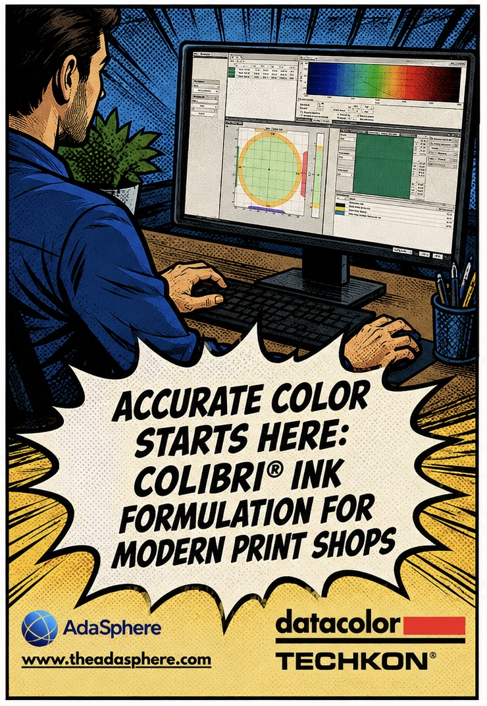
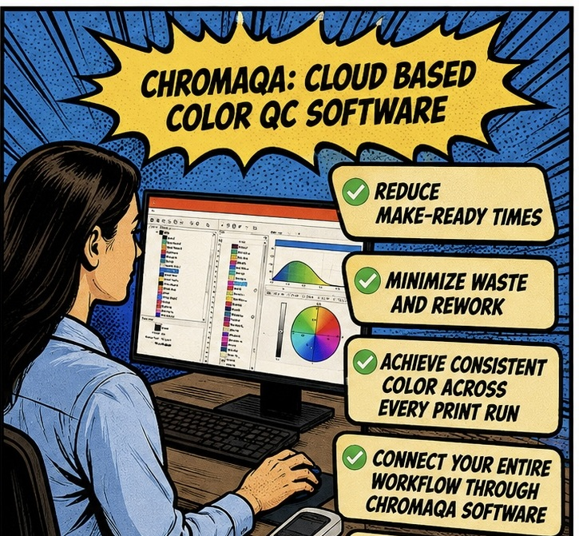
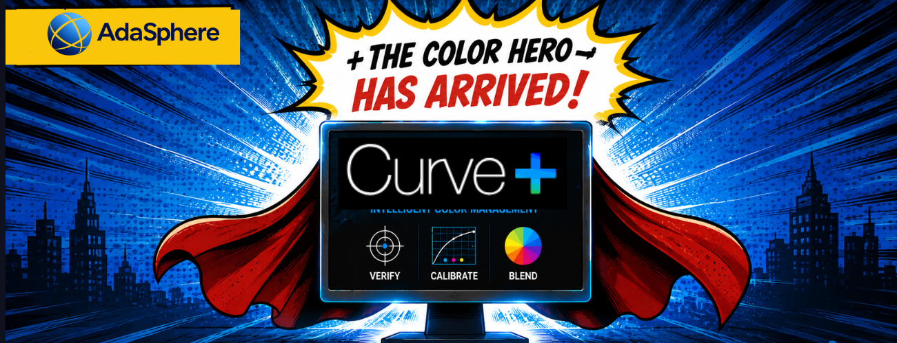
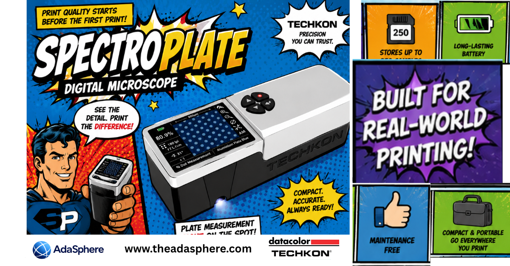

Articles
Ideas and updates from the AdaSphere team. Click any story to read the full piece.

Accurate Color Starts Here: Colibri® Ink Formulation For Modern Print Shops
Smarter color development with Datacolor Colibri® Ink Formulation — from print shops to packaging industries.

Beyond the Instrument: Why Closed-Loop Color Control Is About More Than the Instrument
Closed-loop color control succeeds when technology, expertise, training, and local support work together.

ChromaQA: Intelligent Cloud-Based Color Quality Control for Modern Print Production
Cloud-based color QC that turns measurements into clear guidance for press operators and ink technicians.

Curve+: Intelligent Color Measurement, Faster Press Profiling, and Greater Production Efficiency
Calibration, profiling, and Virtual Press Run with Curve+ and TECHKON SpectroDens.

Why G7+™ Expert Certification Is Essential
G7+ as the global standard for print color consistency — and why Expert certification matters.

SpectroPlate: The Digital Microscope Transforming Offset Plate Quality Control
How TECHKON SpectroPlate helps printers measure plate quality on-site — reducing waste and improving process control.